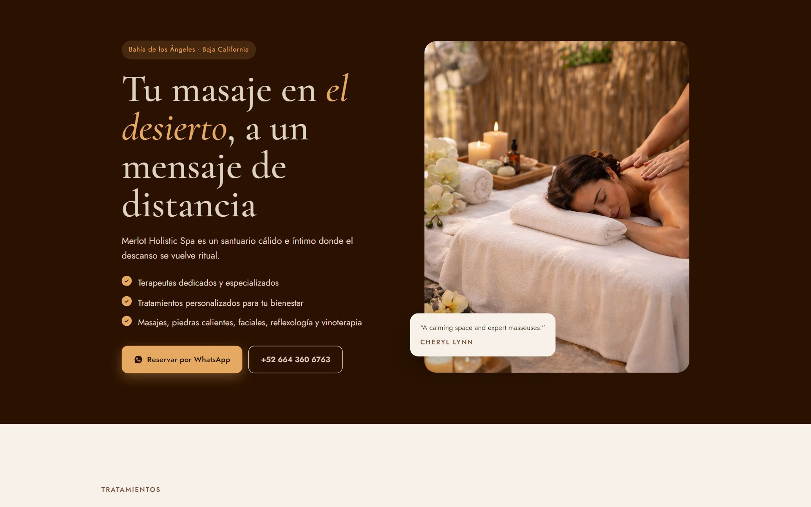
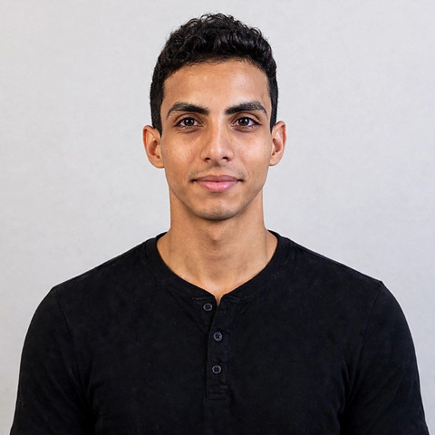

Diseño web
Renovamos tu web actual con tu marca real: tus servicios, tus precios y tu WhatsApp a un toque.
Desde 100 USD · en menos de 48 horas
Consultoría digital de alto nivel para negocios privados y pymes en Colombia, México, Estados Unidos y el resto del mundo.
Tu puntuación de 0 a 100 y las 5 correcciones más urgentes. Sin pedirte contraseñas, 100 % en remoto.
Pide tu diagnóstico SEO gratisRenovamos tu web actual con tu marca real: tus servicios, tus precios y tu WhatsApp a un toque.
Desde 100 USD · en menos de 48 horas
Sabemos exactamente dónde tu negocio pierde tiempo y dinero, con evidencia, no suposiciones.
Desde 200 USD
Que la Inteligencia Artificial recomiende tu negocio, no solo las búsquedas en Google.
Desde 150 USD

Somos Dastan Tamayo, fundador de DASTAN X-TECH, e Isdiel Martínez, consultor y estratega digital. Trabajamos con negocios privados y pymes de cualquier sector que hacen un buen trabajo pero no lo reflejan en internet.
Empezó con nuestro propio negocio: en internet casi no se veía. Estudiamos cómo se gana visibilidad hoy —en Google, en las redes y en la IA— y así nació esta consultora.